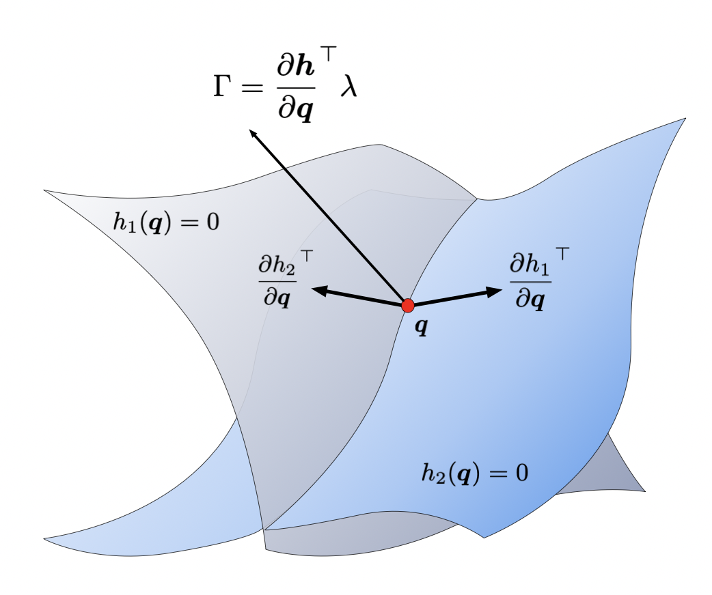
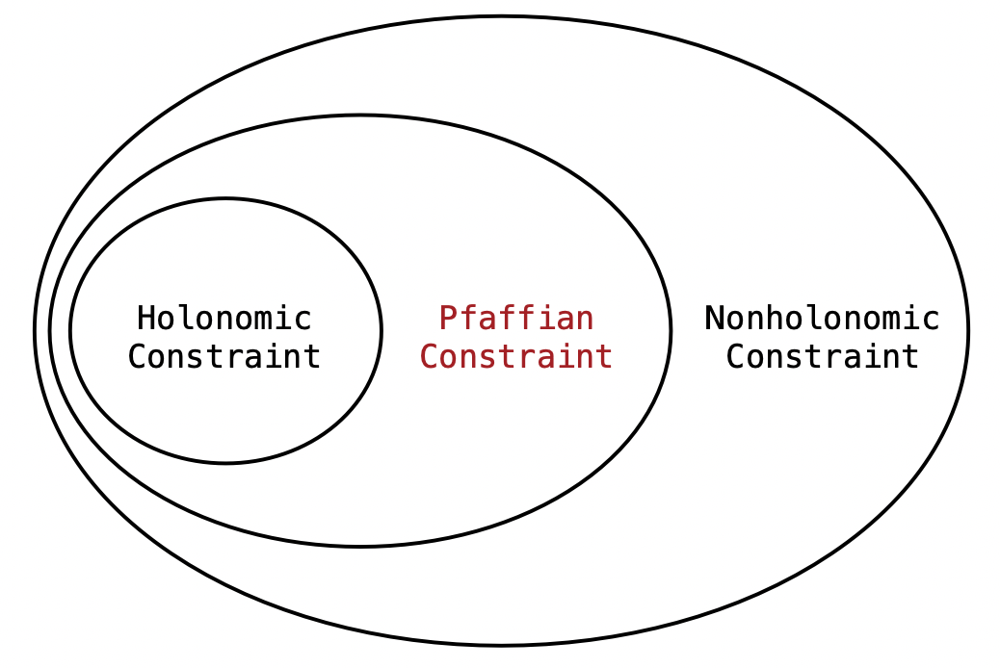

[MLS94] Constrained Lagrangian Dynamics
Holonomic and Nonholonomic Constraints
At a time instant, a system may be subject to
- Velocity constraints
- Holonomic constraints
- Nonholonomic constraints
- Force constraints
A constraint is said to be holonomic if it restricts the motion of the system to a smooth hyper-surface in the unconstrained configuration space.
$$ h_i (\qb, t) = 0, \quad i = 1,\cdots, k.$$
Linear combination of holonomic constraint forces:
where $\lambda \in \mathbb{R}^k$ is the vector of relative magnitudes. No work is done by the constraint since

Holonomic constraints might be given in differential form and can be integrate to genereal form. However, some constraints are not integrable. For example, multifingered hand rolling constraints are
and can be rewritten as
where
To check if a constraint is integrable, recall result from Stokes theorem1.
An equality constraint that is not holonomic constraint.
Or, a constraint that constrain the velocities of system but not their position.
$$ g(\qb,\qbdot,t) = 0$$
Note: Nonholonomic constraints do not affect the number of DOF in a system. For a system with nonholonomic constraints, the state after some time evolution depends on the particular path taken to reach it.
More generally, for a system with configuration space $\mathcal{C}$, the holonomic constraints and linear velocity nonholonomic constraints can be represented of the so called Pfaffian constraint form
where $A(\qb) \in \mathbb{R}^{k\times n}$ stands for $k$ independent linear velocity constraints.

Thus, an integrable Pfaffian constraint is equivalent to a holonomic constraint.
Lagrange Mechanics
The total virtual work of the external force $\fb_j$ is equivalent to the virtual work done by the inertial force $m\ab_j$:
$$\sum_j (\fb_j -m_j\ab_j) \cdot \delta \rb_j = 0$$
where the virtual displacement $\delta \rb_j$ must consistent with the constraints.
Unlike the Hamilton principle, D’Alembert’s principle is applicable to both holonomic and linear velocity nonholonomic constraints. 12
Let the generalized force $\Gamma_i \equiv \fb_j \cdot \large{\partial \rb_j \over q_i}$, D'Alembert's principle is then
$$\sum_i \left[ {d\over dt}\left({\partial T\over \partial \dot{q}_i}\right) - {\partial T\over \partial q_i} - \Gamma_i \right] \delta q_i = 0$$
If the system is subject to equality constraints, $q_i$ shall now depend on each other and therefore the virtual displacement $\delta q_i$ cannot be freely chosen.
Decomposing the virtual work $\Gamma_i \delta q_i = \fb_i \cdot \delta \rb_i$ into a potential part
derived from a generalized monogenic potential $U(\qb, \qbdot, t)$ and a nonpotential part $Q_i^{\rm NP} = F_j^{\rm NP} \cdot \large{\partial \rb_j \over \partial q_i}$ gives a more useful Lagrange-d’Alembert’s Equation.
$$\sum_i \left[ {d\over dt} \left({\partial L \over \partial \dot{q}_i} \right) - {\partial L \over \partial q_i} - Q_i^{\rm NP} \right] \delta q_i = 0$$
where the Lagrangian is
$$L(\qb, \qbdot, t) = T(\qb, \qbdot, t) - U(\qb, \qbdot, t)$$
and $Q_i^{\rm NP}$ is the nonpotential part of the generalized force $Q_i = F_j \cdot \large {\partial \rb_j \over \partial q_i}$.
Note: $\delta \qb$ should also subject to constraints.
Lagrange Multiplier Method
We consider the dynamics of a system with $k$ constraints given in the Pfaffian form:
Virtual displacements $\delta \qb$ are performed at fixed time, i.e., with $\delta t = 0$. D’Alembert principle states that virtual displacement do no work, then the above constraint changes to the instantaneous constraints
in which the null space of $A$ gives the set of directions that the system is allowed to move. This in turn leads to
Substituting back to the generalized coordinates d’Alembert’s Equation gives
Since the Lagrangian multiplier $\lambdab$ can take any value, we can choose them in such a way that
where $\qbdot_1, \qb_1$ and $\Gamma_1$ are the first $k$ components of $\qbdot, \qb$ and $\Gamma$, respectively; $A_1(\qb) \in \mathbb{R}^{k\times k}$ is the first $k$ linear independent columns of $A(\qb)$:
Such $A(\qb)$ can always be achieved locally by reordering the configuration space variables. The rest $n-k$ virtual displacements $\delta\qb_2$ are then no longer subject to constraints since for any $\delta \qb_2$ we can always find a $\delta \qb_1$ such that
Now $\delta \qb_2$ are free variables and the corresponding coefficients in the d’Alembert equation should always be zero:
Combined with the $k$ Pfaffian constraints, the motion of the system is determined.
In the case that Lagrangian has the form $L(\qb, \qbdot) = {1\over 2} \qbdot^\top M(q)\qbdot - V(\qb)$, the equation of motion can be written as
where $F$ corresponds to the vector of external forces and $N(\qb, \qbdot)$ includes nonconservative forces as well as potential forces. By multiplying $A(\qb)M^{-1}(\qb)$ to both sides, we have
Differentiating the Pfaffian constraints and substitute to the above equation yields
If the constraints are independent, i.e. $AM^{-1}A^\top$ is full rank, the values of the Lagrange multipliers are given by
Using this equation, the Lagrange multipliers can be computed as a function of the current state $\qb$, $\qbdot$ and the applied forces, $F$. And hence the equation of motion becomes
Find a set of generalized coordinates which completely (and minimally) parameterize the configuration of the system.
The Lagrange-d’Alembert formulation of the dynamics represents the motion of the system by projecting the equations of motion onto the subspace of allowable motions. If $\qb = (\qb_1, \qb_2) \in \mathbb{R}^{(n-k) + k}$, and the constraints have the form
then the equations of motion can be written as
In the special case that the constraint is integrable, these equations agree with those obtained by substituting the constraint into the Lagrangian and then using the unconstrained version of Lagrange’s equations.
Common Mistake
Think about a Pfaffian system with configuration $\qb = (\rb, s) \in \mathbb{R}^2 \times \mathbb{R}$, constraint
and Lagrangian $L(\rb, \rbdot, \dot{s})$ (not depend on $s$).
A common mistake when deriving the equations of motion for a mechanical system with nonholonomic constraints is to substitute the constraints into the Lagrangian and then apply Lagrange’s equations. When the constraints are used at the wrong time, it may gives the wrong equations of motion for the system.4
If we substitute the constraint directly to the Lagrangian, it gives
Suppose we substitute the constrained Lagrangian $L_c$ into the Lagrange-d’Alembert equations. Since no dependence on either $s$ or $\dot{s}$, it yields
Expanding the equations using definition of $L_c$, we obtain
The rhs of the equation represents spurious terms that arise from substituting the constraints into the Lagrangian.
Now we show the result given by the standard Langrange multiplier method.
The first equation gives
Substitute back to the second two equations, we obtain the correct result:
Conclusion
The Lagrange multiplier method can be used for
- Holonomic system
- Reduce all the $\qb$’s to independent coordinates
- Obtain the forces of constraints (e.g. tension)
- Nonholonomic system in Pfaffian form
- Derive system dynamics in a easier way
Steps to derive system dynamics with Pfaffian constraints:
- Compute the unconstrained Lagrangian
- Substitute into the Lagrange-d’Alembert equations
- Reapply the constraints to eliminate the dependent variables (Lagrange multiplier method)
1. University of Pennsylvania ME535 - Holonomic and Nonholonomic Constraints ↩
2. Flannery, M. R. “The enigma of nonholonomic constraints.“ American Journal of Physics 73.3 (2005): 265-272. ↩
3. Greiner, W. (2009). Classical mechanics: systems of particles and Hamiltonian dynamics. Springer Science & Business Media. ↩
4. Murray, R. M. (2017). A mathematical introduction to robotic manipulation. CRC press. ↩